Hjemmelagde pølser smaker bedre enn kjøpte (her er en oppskrift)
Min gode venn Joacim introduserte meg for hjemmelagde pølser en gang for to eller tre år siden. Jeg inviterte meg selv hjem til ham for å lære, og fikk pent beskjed om å ta med en kilo spekk og åtte meter fåretarmer.
– Du vet, Lucas, at pølser må ha fett. Og selvom vi skal lage lammepølser, så er svinefett det beste pølsefettet. Fårefett smaker ikke spesielt godt, sa Joacim.
Jeg stoler selvfølgelig på Joacim, så jeg dro på Strøm-Larsen (slakter på Torshov) og kjøpte med meg fett og fåretarm. Digg.
Joacim blandet inn de beste urtene i pølsefarsen: hvitløk, fennikel, chilli osv… Alt mulig godt.
-Det er viktig å eksperimentere, vettu. Noen av de beste pølsene jeg har laget, blandet jeg inn hjemmelagd pesto i farsen, sa Joacim.
Så jeg sier dette videre til deg: Etter at du har behersket pølsekunsten er det ikke bare din rett, men også din plikt å videreutvikle kunsten gjennom eksperimentering. Stapp alt du liker i farsen, bortsett fra en bestemt mengde salt. Smak til ved å steke en bit av farsen i stekepannen, og fortsett til du har den perfekte pølseoppskriften.
Lykke til!
Men først skal jeg vise deg hvordan man lager pølser…
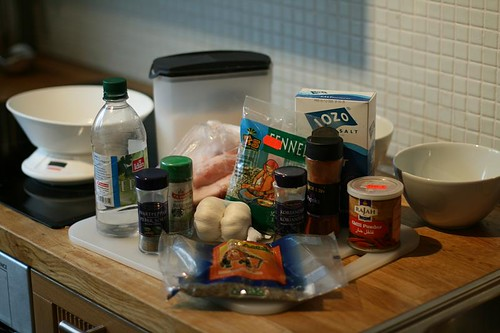
Det anbefales å lage minst to forskjellige pølsetyper når du først skal lage pølser. Dvs minst to forskjellige oppskrifter. Her skal jeg vise deg hvordan du lager en mild Chorizo og en italiensk salsiccia.
OG DET ANBEFALES �? V�?RE TO PERSONER! En til å fylle på med farse og en til ta i mot pølsene!
Oppskrift Chorizo (4,5 kilo pølser)- Dersom du skal lage mindre, feks 1 kilo, deler du bare innholdet på 4,5. Men lag minst to-tre-fire kilo når du først skal lage pølser.
4 ss salt
2,3 dl vanlig eddik
5 ss paprikapulver
3 ss kvernet pepper
3 ss fersk hvitløk
1 ss oregano (pulver eller fersk)
2 ts grovt svart pepper
2,3 dl vann
4,5 kilo svinebog, eller annet svinekjøtt med mellom 33-25 % fett. Du kan eventuelt blande magert kjøtt med spekk, men fettmengden bør ligge på 1/3 ca.
fire-fem meter svinetarm (tynne middagspølser) Spør slakteren for sikkerhetsskyld dersom du skal bruke fåretarm (wienerpølser)
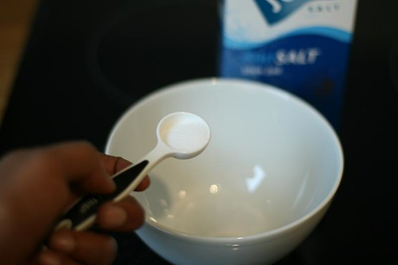
Mål opp saltet (dette er det viktig at du ikke er spesielt kreativ mht mengde)
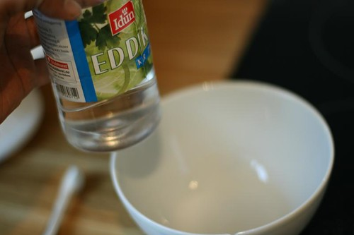
Eddik. Vanlig type, ikke noe rødvinseddik…
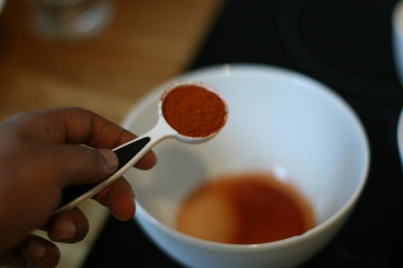
Paprikapulver.
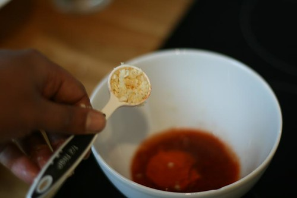
Fersk hvitløk!
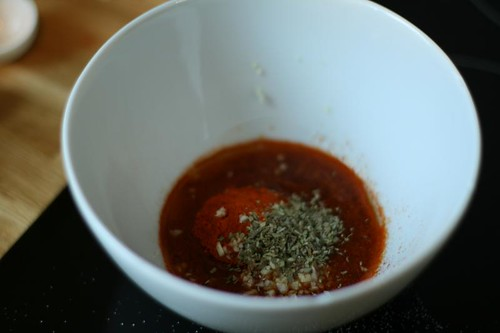
Oregano + pepper!
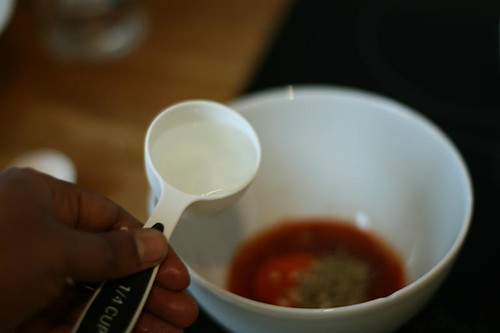
Og vann!
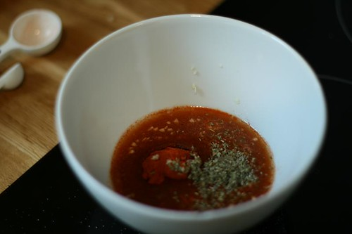
Her er pølsesmaken din. Verre var det ikke!
Oppskrift italiensk salsiccia (4,5 kilo pølser)- JEG GJENTAR: Dersom du skal lage mindre, feks 1 kilo, deler du bare innholdet på 4,5. Men lag minst to-tre-fire kilo når du først skal lage pølser.
4 ss salt
5 dl isvann
1 ss kvernet fennikelfrø (gjerne i en morter)
2 ss grovt svart pepper
1 ss sukker
1 ts karvefrø
1 ss koriander
4,5 kilo svinebog, eller annet svinekjøtt med mellom 33-25 % fett. Du kan eventuelt blande magert kjøtt med spekk, men fettmengden bør ligge på 1/3 ca.
fire-fem meter svinetarm (tynne middagspølser) Spør slakteren for sikkerhetsskyld dersom du skal bruke fåretarm (wienerpølser)
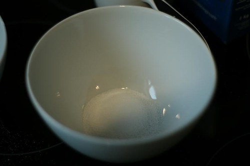
Først salt
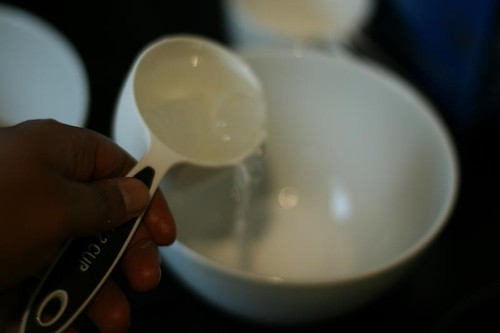
Vann + is. Husk Arkimedes' Eureka !
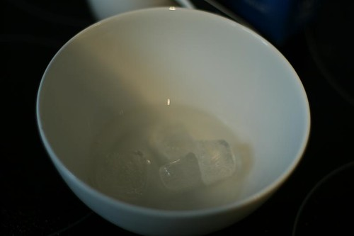
Leste du innholdet på linken over, så blir det antagelivis litt bedre pølser..
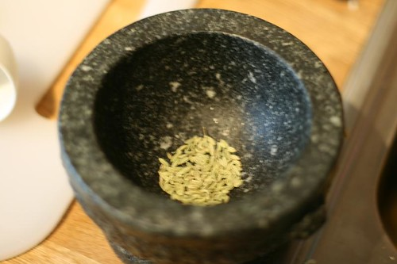
Finn frem mortere og begynn å finmale fennikelfrøene
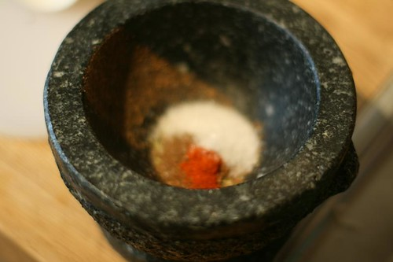
Opp i med resten av krydderet og mal sammen.
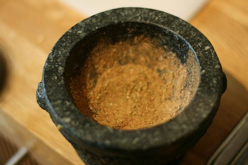
Slik bør resulatet se ut.
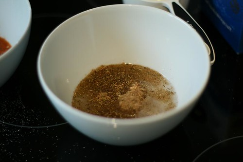
Hell krydderet oppi vannbollen og du har nå smak til to pølsetyper.
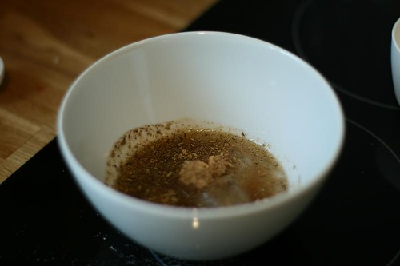
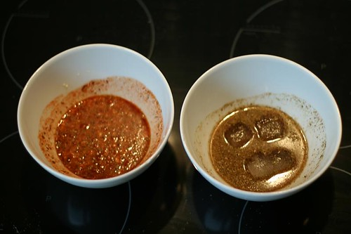
Slik. Dette er det enkleste, og også det kjipeste. Nå kommer det virkelige kule. Har du sett svinetarmer før? Vel, se på bildet under.
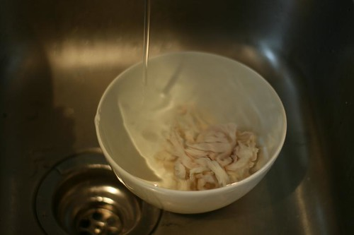
Putt tarmene i en bolle, og la det renne kaldt vann i 5 minutter….
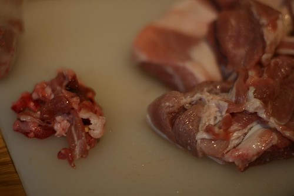
I mens skjærer du bort blodige biter fra kjøttet. Dette kjøttet er så fett at jeg ikke trenger spekk i tillegg. Jeg ba om å få pølsekjøtt hos slakteren, helt enkelt. Men du kan også kjøpe svine-koteletter i butikken og bruke det. Det ville jeg gjort. Mye billigere.
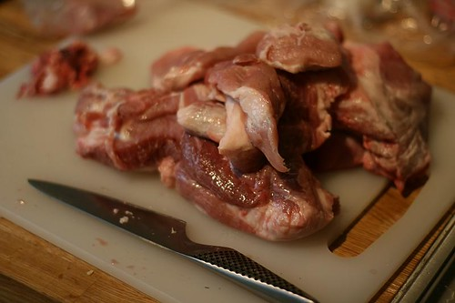
Hmmm fett kjøtt!
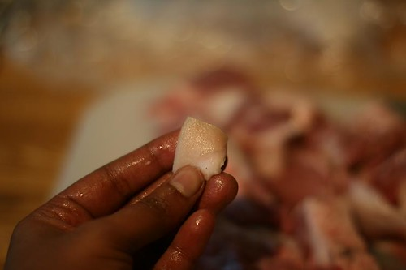
Skjær bort svor. Det trenger vi ikke.
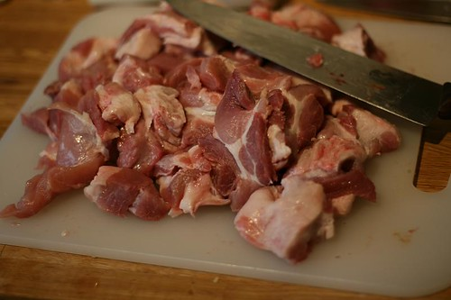
Og kutt kjøttet opp i biter slik at det får plass i kjøttkværna.
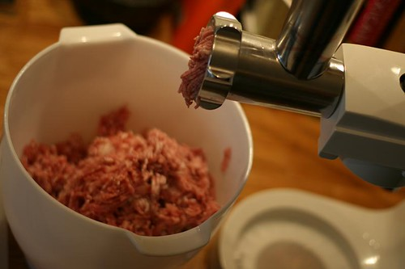
Kvern kjøttet på de minste hullene i kverna.
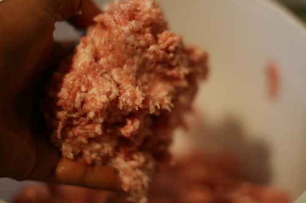
Pølsefarsen er veldig fet og god, nesten som medisterfarse.
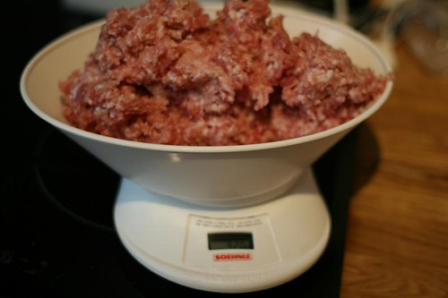
Mål opp riktig kjøttmengde i forhold til krydderblandingene.
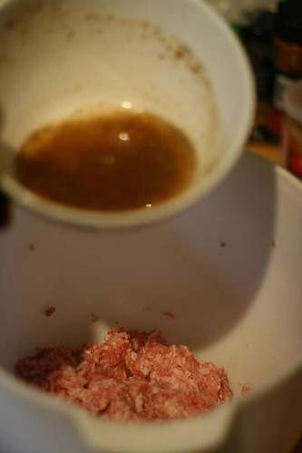
Hell i blandingen (dette er faktisk den italienske pølsa, men herfra og ut er det samme fremgangsmåte).
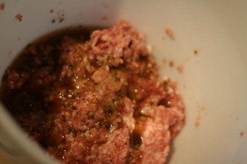
Bland godt med hendene i minst 4 minutter.
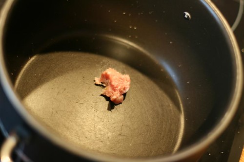
Ta en liten farsebit og stek den i en kasserolle eller på en stekepanne. Smak. Liker du den, fortsetter du. Liker du den ikke, legger du til det du mener mangler, og fortsetter å smake til du er fornøyd.
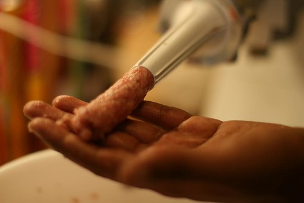
Fest på pølsehornet på kverna, og kjør ut farsen for å se om det funker. JA, det funker i dette tilfellet, så nå er det tid for å finne frem tarmene.
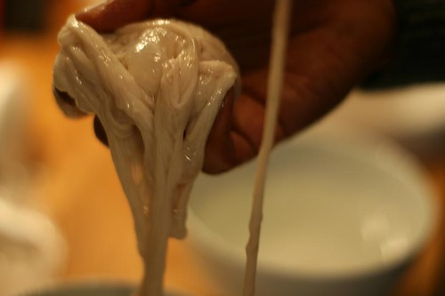
Tarmene må holdes fuktige hele tiden. Og før du fester dem på pølsehornet er det viktig at de er rengjort ordentlig. Tre den ene enden av tarmen på springen og kjør vann gjennom et par ganger. Vær forsiktig.
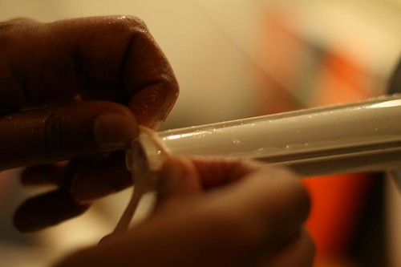
Ok, så kan du tre den på. Heldigvis har pølsehornet minimal sjanse for å bli slapp underveis, så dette er faktisk ikke så vanskelig. Det er VELDIG VIKTIG å fukte pølsehornet ordentlig, og fukte underveis. Det bør hele tiden være veldig vått der tarmene er. VELDIG VELDIG V�?TT!
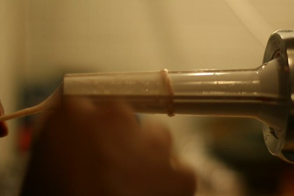
Tre den på! (det ser nesten litt pinlig ut det bildet der)
Og fortsett å tre på ……
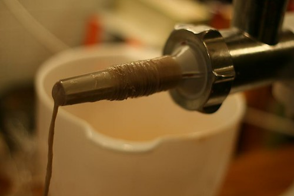
Til den ser slik ut.
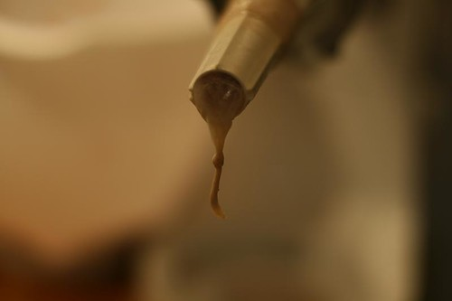
Lag en knute på enden, sett i gang maskinen, og hjelp til med å løsne fremover på tarmen mens kjøttet fyller tarmen…
(Beklager at jeg ikke har noen bilder her… vanskelig å ta bilde samtidig som jeg lager pølser)
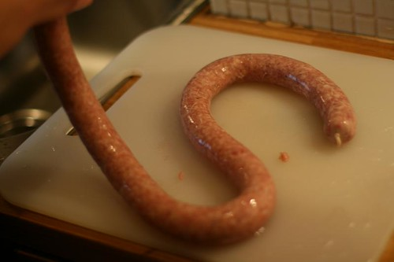
Men dette skjer….tarmen fylles opp av kjøtt og blir til en lang ålete pølse.
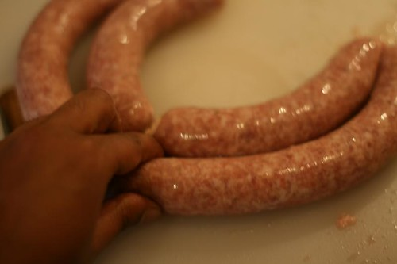
Når du er ferdig med å fylle kjøtt et, klemmer du sammen med tommel og pekefinger på det stedet pølsen skal ha sitt skjøte. Hver 20-25 cm.
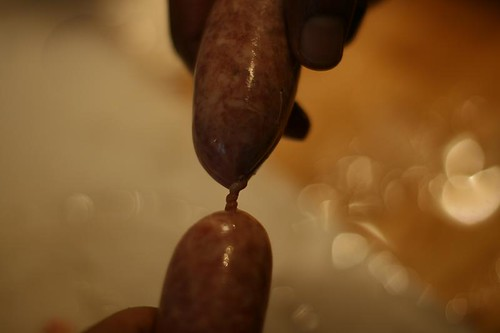
Tvinn deretter den ene enden i en retning og den andre i den andre retningen. Fortsett slik på annehver pølse. Dvs…hvis pølsen til høyre tvinnes fremover, tvinnes pølsen til venstre bakover, og den til venstre for den igjen tvinnes forover. Men etter hver tvinning, så knyter du med en kokkesnor, kjøttsnor, på selve , "”": tvinneområdet”- det som er i fokus på bildet- Knyt, klipp av snoren og fortsett til neste pølse.
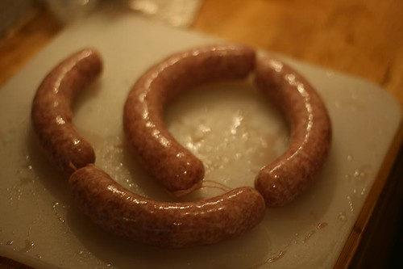
Slik vil det se ut etterhvert…
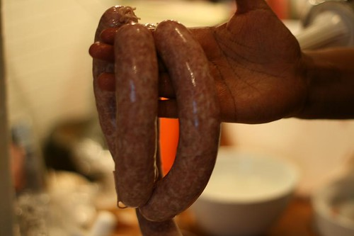
Hmm deilige pølser…
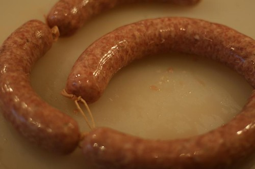
enda mer deilige pølser..
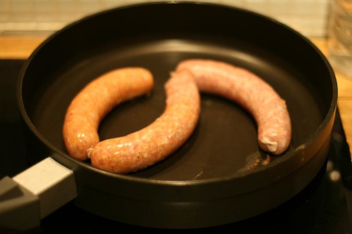
Stek pølsene i panne til de blir brune (på lavt-medium)… Deretter kan du helle litt kraft, hvis du har, i pannen, og på med et lokk, og la dem dampes i 20-30 min… Eller bare spise dem ferdigstekt.
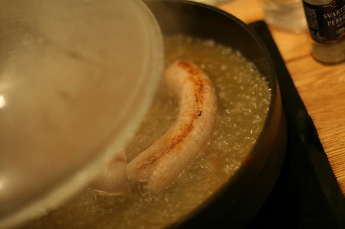
Eller du kan bake dem i ovnen i 45 minutter på 190 grader.
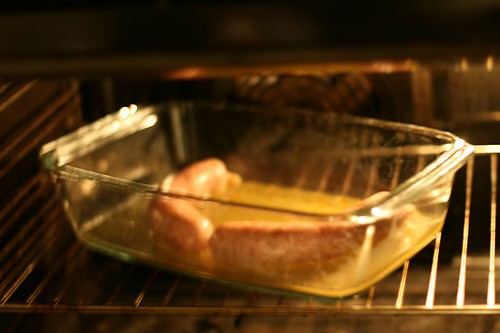
Husk å sjekke om de er ordentlig gjennomstekt før du spiser.
Lager du Wienerpølser med fåretarmer (mye tynnere), kan du la dem trekke i nykokt vann med laurbærblad og buljong i 15 minutter. Deretter kan de stekes eller trekkes på nytt dersom du fryser dem ned.
Lykke til! Håper pølsene smaker. Det gjorde i hvertfall disse.
PS: Legg igjen epost-adressen din under, så sender jeg den en mail når jeg legger ut neste oppskrift.